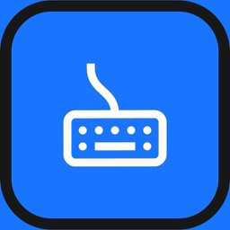
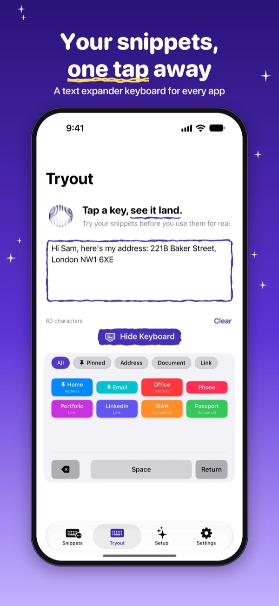
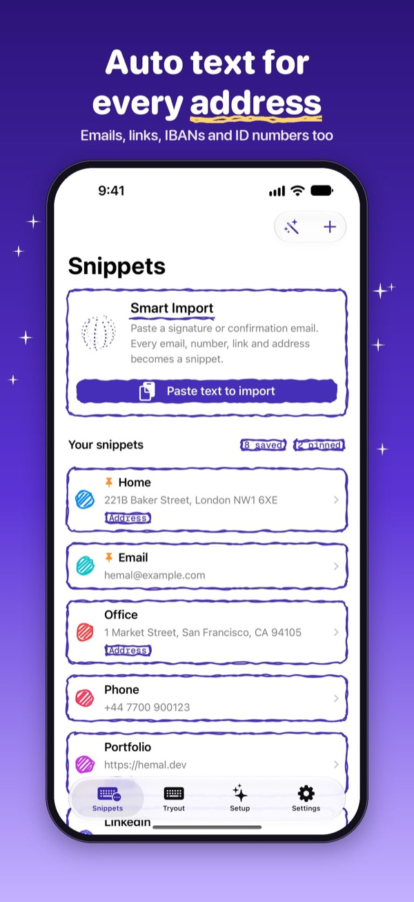
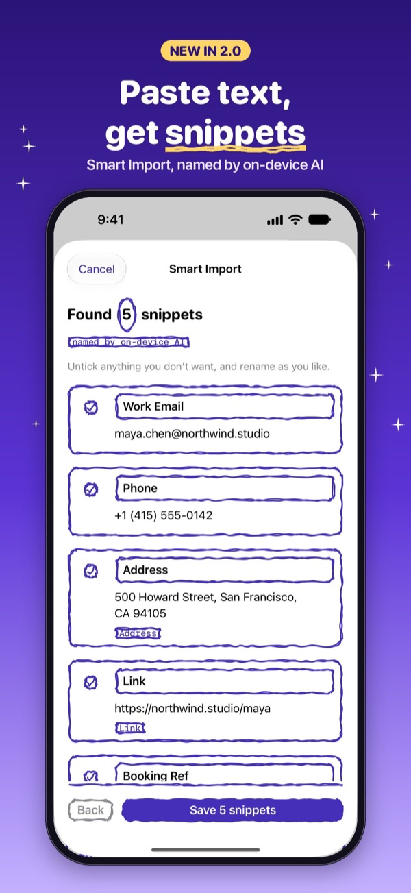
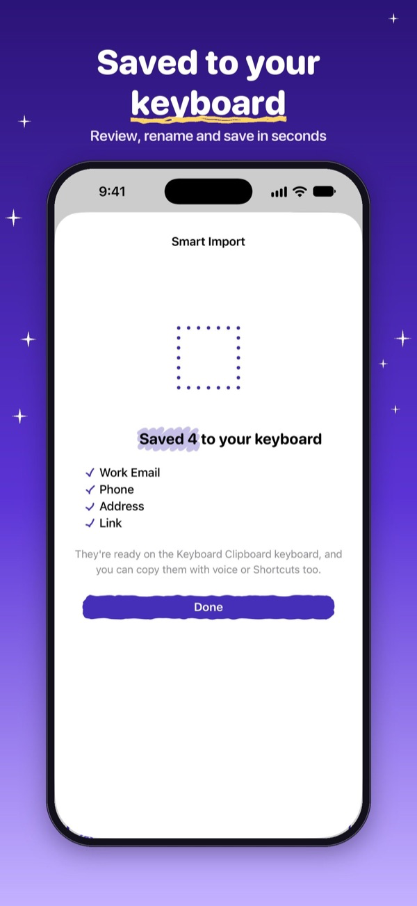

Keyboard Clipboard: Snippets
Text expander keyboard · App Store · updated 17 October 2026
What is new
Version 5.6.2 is live. The Tryout tab shows the keyboard under a text box so a first-time user can tap a snippet and see it land. The store text lists three steps: save snippets, turn the keyboard on in Settings with Full Access, switch to it in any app.
Facts
- Version
- 5.6.2
- Platforms
- iPhone and iPad
- Languages
- 24 App Store locales, including English (US, UK, Australia, Canada) and Spanish (Mexico)
- Privacy
- Snippets stay on the device in a container shared only with the keyboard; the keyboard has no network code and never records or sends what is typed
- Accessibility
- Light and dark mode
- Window
- 11 December 2026 to 1 January 2027
- Developer
- One developer, Dubai
Screens
Screens from the App Store set. These are App Store frames with captions, because the repo for this bundle was not available and holds no raw captures.




Why now
- Add or change keyboards on iPhone Apple Support, iPhone User Guide, undated